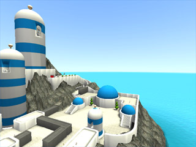

Joefish
About Me
Also known as Joe, but that username tends to be taken.
I am working on a simple level as a way of learning the Unreal tools ... it has turned into a simple mod because of a few things I wanted to try ... the wiki has quickly become my #1 resource and I'm grateful for it. I'm new to OOP and when I FINALLY figured out how to downcast an object reference (Typecasting) I just about fell off my chair.
Bobodinga 'MiniMod'
Woohoo! I finally finished the $%@*& thing! A single-player, 3rd-person, mini (1-level) mod. Simple and quiet. Run, jump, and solve a puzzle.
I would be grateful to anyone who takes the time to give it a spin. Any feedback appreciated - here or email me at jp-at-groovetronix.com.
Download Bobodinga from here: http://www.groovetronix.com/jp/bobo.
update 6.27.05 - OK I figured out how to (mostly) fix my static mesh lighting. Culled some unnecessary edges and learned about Maya smoothing. I fixed the seams between my wall sections by making the edge of each wall module perfectly mirror-symmetrical with its neighbor. It's not enough to just line up verts! There are still some minor glitches but it looks a lot cleaner.
update 9.20.05 - looks like I have got a (paying) job (hooray!), so I'm afraid it will be quite some time before I bust out the sequel. Eventually, for sure.

Comments
Tarquin: Hi. Welcome to the unreal wiki. 
EntropicLqd: Hello and welcome. I'm glad you find the Wiki useful.
Joefish: Thanks.
Graphik: I'm downloading now.
Graphik: Played a bit and got stuck down at off of the main platform near the edge. I'll try it again.
Joefish: Dang, up where the key / map sign is? In terrain or just against the wall? I'll fix it if I can find it.
Graphik: I played it through and found it rather enjoyable. The theme was bright and musical, and the puzzle wasn't easy nor was it so difficult that I felt like chucking my computer out of the window. Of course, it wasn't perfect. That's a given for a mod or anything else in life. And since you did say you'd like some constructive criticism, here's a mini-review:
The game was fun. I haven't enjoyed a good puzzle game since ZZT, but this one held my attention rather well.
Graphically, the mod was refreshingly and pleasantly themed but had some technical difficulties. The stairways and light-colored platforms were not shaded smoothly, and are probably in need of some polygonal tweaking. I'm not much of an expert in this area either, so I'm afraid I can't help you actually fix this. The sea surrounding the island appears to be having some difficulties as well. But I'm sure you already knew of these minor flaws.
The cutscenes were very cool and were definately highlights of the mod.
The game only one bug that I could decern: It is possible to get down to the bottommost level of the island prematurely by jumping. The problem with this is that at that point I had not unlocked the ability to use middle-mouse, so I was stuck and had to restart the level.
Also, a suggestion: ambient sounds! These would improve the atmosphere a lot.
All of these are relatively minor problems. The mod as a whole was enjoyable and worth downloading.
Joefish: Thanks Graphik. Great points. I need to figure out static mesh shading. And I'll fix that bug. Very glad you enjoyed it.
Graphik: I played through it again (takes 16x less time to complete when you know what to do ) and noticed that it does have ambient sounds, I just had to turn my speakers up louder to hear it.
Foxpaw: I noticed a slight graphical glitch, on at least one of the blue domes, if you are up on the white ridge around the dome, and move the camera so you are looking down, you can see between the wall and the dome.
As far as the static mesh shading goes, there isn't much you can do about it. It's an artifact of the way that the lighting is done by your video card. This could be rectified by uploading it to the video card differently (with conjoined meshes being treated as one) but the Unreal Engine does not do this. One possible fix would be to make the walls unlit and use shadow projectors to give shading. This would degrade performance somewhat, however.
There's also a place where you can get "crushed" between two of the moving grey blocks, resulting in you getting "teleported" to the side of one of the blocks. I don't mean in the parts with the ones that come together, these two move perpindicular to each other.
I'm not sure if it's intentional, but if you left click twice quickly, the three small domes remain unchanged, but the large dome changes state. I didn't pay that much attention to the initial state of the domes so I don't know if that was required to solve the puzzle or not.
Also I don't really understand how the "key" thing worked. I couldn't get it to work, but then it just kind of happened accidentally. I won't list what I tried because I don't want to spoil the puzzle for anyone.
Err, thought I'd elaborate on what I said about the shading above - basically, the models are shaded according to light sources and the normals of the vertices. So, in order words, a vertex that's facing "away" from a light source is assumed to be on the far side of the object, and should not be lit by that light. This is how parts of one mesh "block" the light from being cast onto other parts of the mesh.
When you have two separate meshes, this does not occur. The side facing the light, which is in reality blocked from the light by another wall section, still gets lit because it would be far too much of a load on the video card to check to see if other meshes were blocking a light.
Actually, while writing that, I had an idea. Try making wall sections that don't have ends on them. IE, the two long flat sides should be connected at the top, but should be "open" at the ends. Then you wouldn't have those vertices getting lit despite being blocked, and it wouldn't be interpolating onto visible areas of the mesh. Of course, you would then have to create separate "end pieces" for your walls.
Joefish: Thanks for the feedback Foxpaw. Sorry the puzzle worked by accident  . The way the domes state-change is intentional, but probably needs more pointing-out within the level, so it doesn’t confuse.
. The way the domes state-change is intentional, but probably needs more pointing-out within the level, so it doesn’t confuse.
The grey block crush / teleport-out is intentional – in fact it was a royal pain to set up! I made the movers 'ignore when encroach' to get them to push you around, but then you would get stuck inside them when they 'crush' you. The teleport-out is my inelegant solution.
Sounds like I may be out of luck on mesh lighting. I guess if I combined large parts of the walls / stairs into single meshes, that would fix lighting, at the cost of way more unique static mesh polys. Something to experiment with anyway. Re. your idea, in fact the wall sections already are "open" at the ends, with separate end pieces. I think I experimented with closed / open walls and they looked pretty similar.
Graphik - glad you found the ambient sfx , I should turn those up.
Joefish: Graphik - I've been hunting like crazy for the spot where you can jump to that bottom area but I just can't find it - can you tell me approx where you jumped from?
Graphik: I just jumped the gate. You have to get a running start and jump at the right time.
Joefish: Got it, thanks G. Fixed that and one other nasty stuck-inside-mesh bug I ran across.